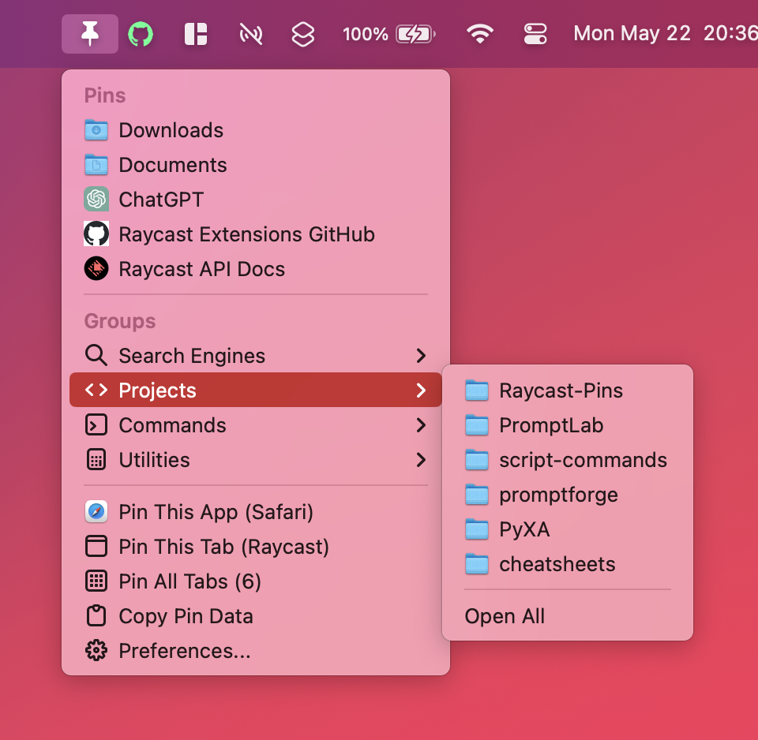

A Raycast extension for pinning anything with a path or URL to the menu bar, with support for pinning Terminal commands as well. Quickly navigate to your favorite sites, folders, and files, conveniently execute Terminal commands, and intuitively manage pins and groups from within Raycast.
| Command | Description |
|---|---|
| Show Pins | Initiates the menu bar extra |
| View Pins | Lists all pins, allows you to edit existing or rearrange existing pins |
| View Groups | Lists all groups, allows you to edit existing groups |
| New Pin | Creates a new pin with a given name, URL/path, icon, and group assignment |
| New Group | Creates a new group with a given name and icon |
| Copy Pins | Copies a JSON representation of your pins and groups to the clipboard |
| Import Data | Imports a JSON string containing pins and groups |
| Resource | Description |
| Main Repository | The main repository for the Pins extension, containing the latest release and all documentation |
| Placeholders Guide | A guide to the placeholders system used in Pins |
| Development Log | Detailed changelog of all updates to Pins |
If you have any questions about PyXA that are not addressed in the documentation, or if you just want to talk, feel free to email stephen.kaplan@maine.edu.